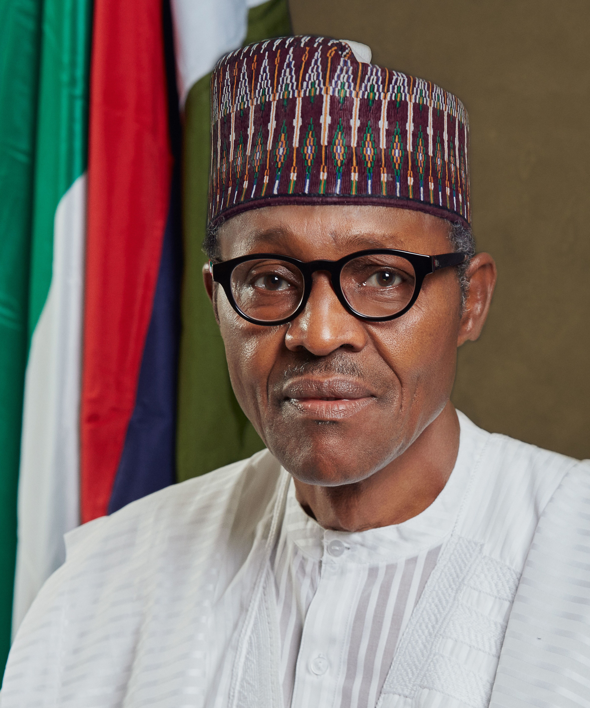
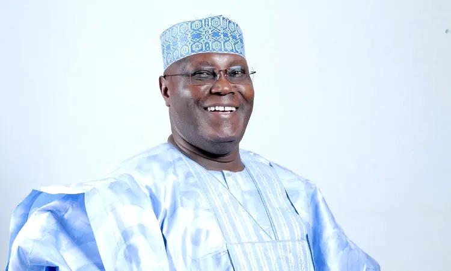
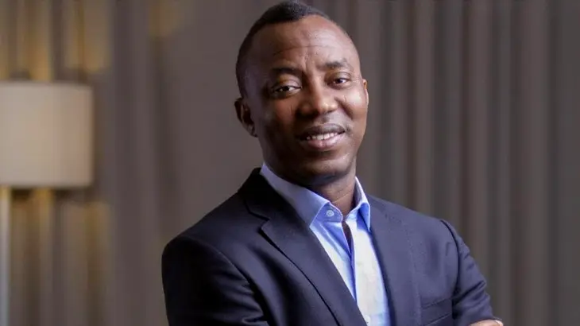
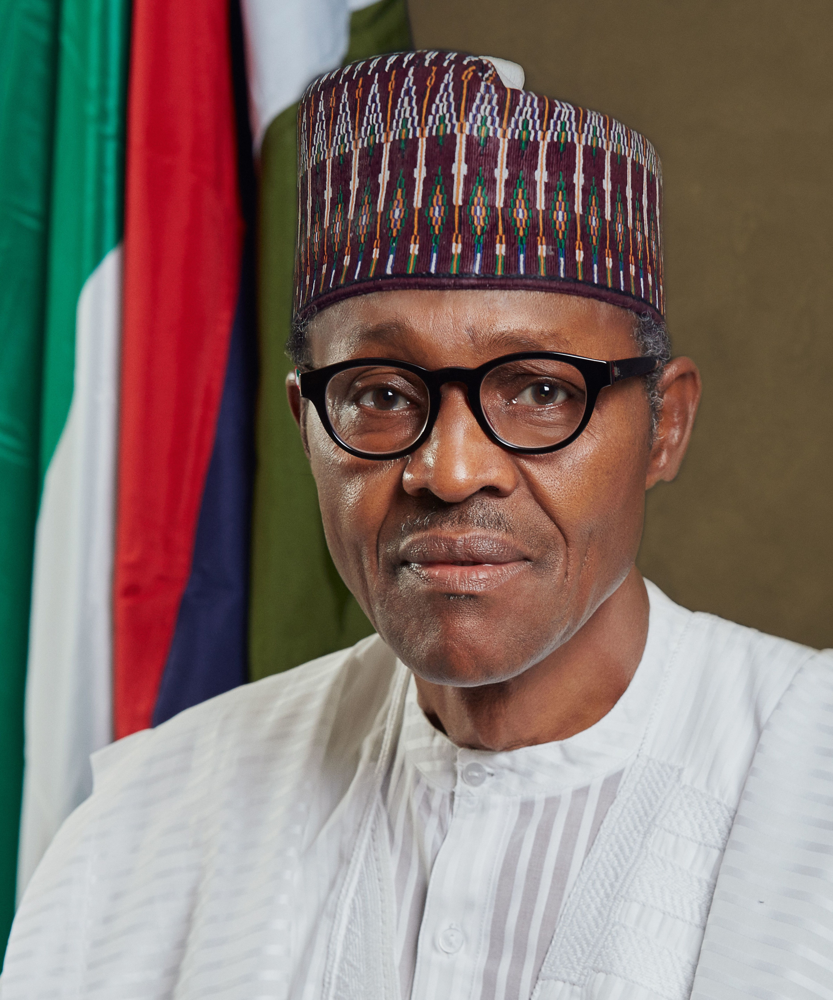
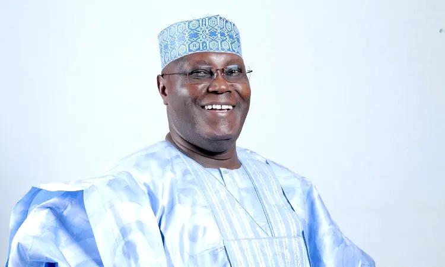
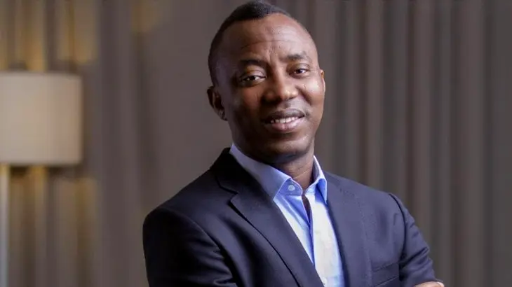

Pres. Muhammadu Buhari 
Atiku Abubakar 
OMOYELE SOWORE 
EZEKWESILI OBIAGELI KATRYN 
Nigeria Presidential Elections Results 2019, Buhari wins. Muhammadu Buhari from the All Progressives Congress (APC) has been re-elected Nigeria's president, defeating Atiku Abubakar of the People's Democratic Party (PDP) after winning in 19 of the 36 states. Mr Abubakar, victorious in 17 states and in the capital, Abuja, has rejected the results.
Pres. Muhammadu Buhari 
Atiku Abubakar 
OMOYELE SOWORE 
EZEKWESILI OBIAGELI KATRYN